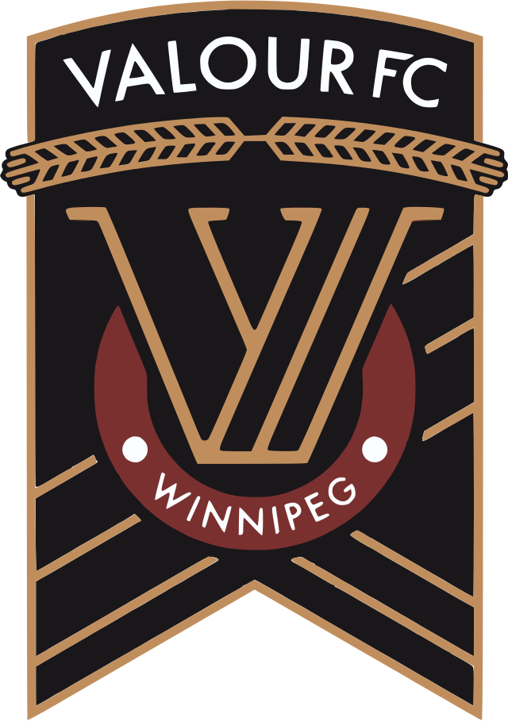
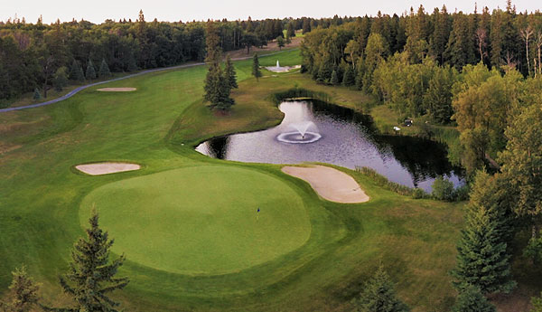
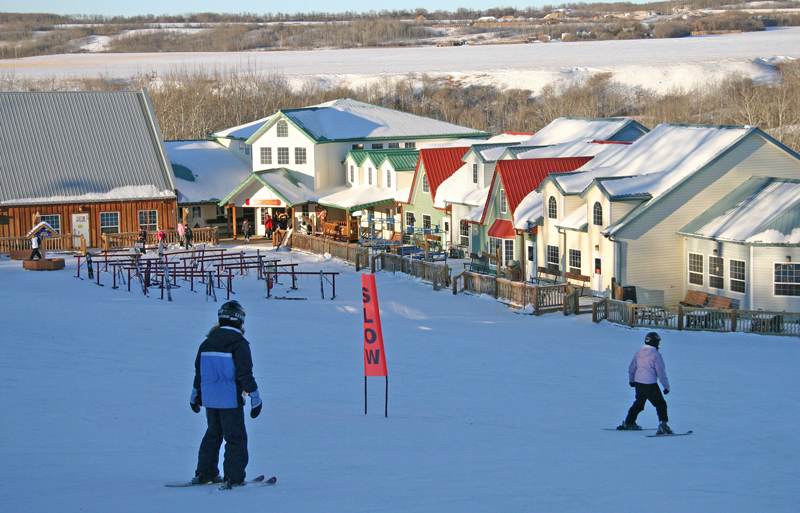

Map of Winnipeg
Current Weather
Winnipeg, Manitoba
Professional Teams
Winnipeg Jets - NHL Hockey

Season: October to April
Venue: Canada Life Centre
Website: Winnipeg Jets
Twitter: @NHLJets
Winnipeg Blue Bombers - CFL Football
Season: June to November
Venue: IG Field
Website: Winnipeg Blue Bombers
Twitter: @Wpg_BlueBombers
Valour FC - CPL Soccer

Season: March to October
Venue: IG Field
Website: Valour FC
Twitter: @ValourFootball
Recreational Activities
Golf

St. Charles Country Club
Website: St. Charles Country Club
Location: Winnipeg, Manitoba (0.5hr drive from Winnipeg)
Pine Ridge Golf Club
Website: Pine Ridge Golf Club
Location: Winnipeg, Manitoba (0.5hr drive from Winnipeg)
Elmhurst Golf & Country Club
Website: Elmhurst Golf & Country Club
Location: Winnipeg, Manitoba (0.5hr drive from Winnipeg)
Niakwa Country Club
Website: Niakwa Country Club
Location: Winnipeg, Manitoba (0.25hr drive from Winnipeg)
Website: St. Charles Country Club
Location: Winnipeg, Manitoba (0.5hr drive from Winnipeg)
Pine Ridge Golf Club
Website: Pine Ridge Golf Club
Location: Winnipeg, Manitoba (0.5hr drive from Winnipeg)
Elmhurst Golf & Country Club
Website: Elmhurst Golf & Country Club
Location: Winnipeg, Manitoba (0.5hr drive from Winnipeg)
Niakwa Country Club
Website: Niakwa Country Club
Location: Winnipeg, Manitoba (0.25hr drive from Winnipeg)
Ski

Asessippi Ski Resort
Website: Asessippi Ski Resort
Location: Inglis, Manitoba (4hr drive from Winnipeg)
Stony Mountain Ski Area
Website: Stony Mountain Ski Area
Location: Stony Mountain, Manitoba (0.5hr drive from Winnipeg)
Falcon Ridge Ski Slopes
Website: Falcon Ridge Ski Slopes
Location: Falcon Beach, Manitoba (2hr drive from Winnipeg)
Holiday Mountain Resort
Website: Holiday Mountain Resort
Location: La Rivière, Manitoba (2hr drive from Winnipeg)
Website: Asessippi Ski Resort
Location: Inglis, Manitoba (4hr drive from Winnipeg)
Stony Mountain Ski Area
Website: Stony Mountain Ski Area
Location: Stony Mountain, Manitoba (0.5hr drive from Winnipeg)
Falcon Ridge Ski Slopes
Website: Falcon Ridge Ski Slopes
Location: Falcon Beach, Manitoba (2hr drive from Winnipeg)
Holiday Mountain Resort
Website: Holiday Mountain Resort
Location: La Rivière, Manitoba (2hr drive from Winnipeg)